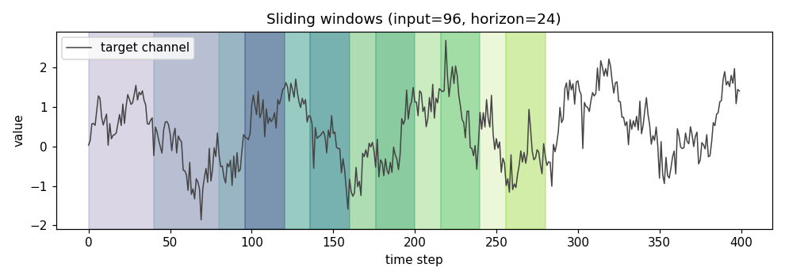
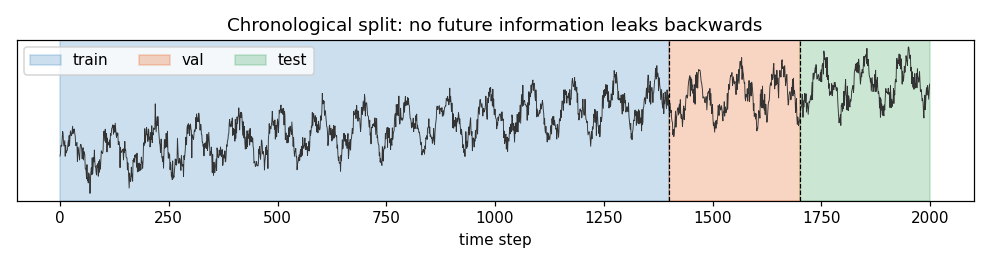
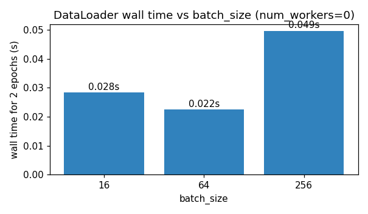

DataLoader 완전 해부: PyTorch로 시계열 슬라이딩 윈도우 파이프라인 구현하기
데이터과학
인공지능
PyTorch
데이터로더
슬라이딩 윈도우
시계열 작업에서 DataLoader는 접착제 코드가 아니라 학습 문제 자체를 정의하는 곳입니다. 이 글은 누수 없는 슬라이딩 윈도우 Dataset을 구현하고, DataLoader가 내부에서 실제로 하는 일을 단계별로 짚은 뒤, 파이프라인 전체를 실제 실행 수치로 지속(persistence) 기준선과 비교해 검증합니다.
저자
Prof. Shin
공개
2026-07-15
[개념 시각화] 본 포스트의 핵심 개념을 요약한 다이어그램입니다.
학습 문제가 실제로 정의되는 곳
일반적인 표(tabular) 문제에서 DataLoader는 대개 반복적인 보일러플레이트입니다. 그러나 시계열에서는 모델링과 관련된 중요한 결정이 조용히 이 층에서 이루어집니다. 입력 길이는 모델이 볼 수 있는 과거의 양을 정하고, 예측 지평(horizon)은 “예측”의 의미 자체를 정합니다. 스트라이드는 표본 간 상관 정도를 조절하고, 분할 지점은 보고된 테스트 오차가 정직한지 여부를 좌우합니다. 이 결정들은 어느 것도 nn.Module 안에 있지 않고, 전부 Dataset과 DataLoader 안에 있습니다.
이 글은 합성 시계열 위에서 다변량·다단계 예측을 위한 최소한이지만 현실적인 파이프라인을 만듭니다. 목표는 Dataset과 DataLoader를 소개하는 것이 아닙니다 — 그것은 PyTorch 공식 문서로 충분합니다. 각 설정 값이 실제로 어떤 비용을 치르는지, 데이터 누수가 어디에서 슬며시 들어오는지, 그리고 파이프라인이 의도한 대로 동작하는지 어떻게 검증하는지를 보이려는 것입니다.
한 문장으로 정리하는 API 계약
PyTorch Dataset은 두 가지만 약속합니다. __len__으로 자기 길이를 알려주고, __getitem__(i)으로 하나의 학습 예제를 즉시 반환합니다. DataLoader는 여기에 샘플러와 배처, 선택적으로 워커 프로세스를 얹은 것입니다. 매 반복마다 DataLoader는 (i) 샘플러로부터 인덱스를 뽑고, (ii) 각 인덱스에 대해 dataset[i]를 호출하며, (iii) collate 함수로 결과들을 하나의 배치로 묶고, (iv) 학습 루프에 넘겨줍니다. 셔플링, 멀티 워커 프리페치, 고정 메모리(pinned memory), drop-last 등은 모두 이 골격의 변주입니다.
시계열에서 이 사실이 중요한 이유는, “표본이 무엇인가”에 대한 정의가 전적으로 __getitem__ 안에서 이루어지기 때문입니다. 여기서 잘못 정의하면 뒤쪽에서 어떤 기법을 얹어도 되돌리지 못합니다.
합성 다변량 시계열
예제를 자기완결적으로 만들기 위해 세 개 채널의 시계열을 생성합니다. 하나는 추세와 일주기·주간 주기를 가진 목표(target) 채널이고, 나머지 둘은 목표와 각각 약한·강한 상관을 가진 외생 변수입니다. 모델이 무엇을 복원해야 하는지 정확히 알 수 있는 유일한 방법은 합성 신호를 쓰는 것입니다.
import numpy as np, torchimport matplotlib.pyplot as pltfrom torch.utils.data import Dataset, DataLoadertorch.manual_seed(0); np.random.seed(0)def make_series(T=2000, seed=0): rng = np.random.default_rng(seed) t = np.arange(T) base =0.002*t + np.sin(2*np.pi*t/96.0) +0.5*np.sin(2*np.pi*t/24.0) x0 = base + rng.normal(0.0, 0.3, size=T) x1 = np.cos(2*np.pi*t/168.0) +0.1*rng.normal(size=T) x2 =0.7*x0 +0.3*rng.normal(size=T)return np.stack([x0, x1, x2], axis=1).astype(np.float32)series = make_series()print("series shape:", series.shape, "dtype:", series.dtype)
series shape: (2000, 3) dtype: float32
series shape: (2000, 3) dtype: float32
배열 형상 (T, D) — 시간이 첫 번째 축, 채널이 두 번째 축 — 은 배치화 뒤 PyTorch의 순환 계층·1차원 합성곱 계층이 요구하는 규약과 일치합니다. 배치 차원은 DataLoader가 앞쪽에 붙여 줍니다.
슬라이딩 윈도우 Dataset
슬라이딩 윈도우 데이터셋은 시간 축을 따라 창을 이동시키며 긴 시계열을 (입력, 지평) 쌍의 집합으로 변환합니다. stride 인자는 연속된 표본 간 창의 이동 거리를 정합니다. stride=1은 표본 수를 최대화하지만, 시작점이 인접한 두 표본은 거의 같은 내용이라서, 가까운 인덱스만으로 구성된 미니배치는 분포를 과소대표하고 학습 신호의 상관을 부풀립니다. 스트라이드를 키우면 표본 수는 줄지만 독립성은 확보되며, 이는 긴 시계열에서 종종 옳은 선택입니다 (Bergmeir 와/과 Benı́tez 2012년).
class SlidingWindowDataset(Dataset):"""Wrap a (T, D) numpy array as (L, D) -> (H, C) samples."""def__init__(self, series, input_len, horizon, stride=1, target_cols=(0,)):assert series.ndim ==2self.series = torch.from_numpy(series)self.input_len = input_lenself.horizon = horizonself.target_cols =list(target_cols) T = series.shape[0]self.starts = np.arange(0, T - input_len - horizon +1, stride, dtype=np.int64)def__len__(self): returnlen(self.starts)def__getitem__(self, idx): s =int(self.starts[idx]) x =self.series[s : s +self.input_len] # (L, D) y =self.series[s +self.input_len : s +self.input_len +self.horizon, # (H, C)self.target_cols]return x, y
여기에는 짚어둘 만한 두 가지 설계 결정이 있습니다. 첫째, 인덱스는 생성 시점에 미리 계산해 두고 __getitem__ 안에서 매번 산술로 유도하지 않습니다. 이렇게 하면 표본을 셔플하거나 부분 표집하거나(예: 결측 구간과 겹치는 창을 걸러내는 등) 필터링하는 일이 표집 코드에 손대지 않고도 자연스러워집니다. 둘째, 목표 축은 리스트입니다. target_cols=(0,)이면 y의 형상은 (H, 1)이 되고, 다중 출력 예측으로 확장하려면 이 리스트만 넓히면 됩니다.
미래 정보를 흘리지 않는 분할
i.i.d. 데이터라면 무작위 분할이 무난합니다. 시계열은 그렇지 않습니다. 무작위 표집은 학습과 테스트 창을 같은 시간 지점의 양옆에 배치해, 모델이 예측이 아니라 보간을 하도록 만듭니다. 기본은 시간순 절단(chronological split)입니다 (Hyndman 와/과 Athanasopoulos 2021년). 이때 놓치기 쉬운 지점은, 절단이 창을 만들기 전에 적용되어야 한다는 사실입니다. 그리고 검증·테스트 구간은 절단선 근처에서 시작하는 창이 온전한 입력 이력을 갖도록 충분한 선행 문맥(leading context)을 포함해야 합니다.
train samples: 1281, val: 277, test: 277
x shape: (96, 3), y shape: (24, 1)
train samples: 1281, val: 277, test: 277
x shape: (96, 3), y shape: (24, 1)
검증과 테스트 슬라이스 앞쪽에 붙은 - INPUT_LEN이 바로 그 세부 장치입니다. 학습 슬라이스는 train_end에서 끝나고, 검증 창은 train_end 이전 인덱스를 뒤돌아볼 수는 있어도 그 지점 이후를 예측하지는 않습니다. 그래서 학습 시 미래를 절대 보지 못하면서도 첫 검증·테스트 창이 유효하게 유지됩니다.

그림 1: 목표 채널 위에서의 슬라이딩 윈도우. 같은 색으로 표시된 두 구간이 한 표본의 입력(옅음)과 지평(짙음)입니다. 스트라이드가 작을수록 인접 창은 거의 같은 내용을 공유합니다.

그림 2: 원 시계열의 시간순 분할. 학습 시 모델은 절대 미래를 보지 않으며, 검증 창은 온전한 입력을 구성할 만큼의 선행 문맥만 소비합니다.
?@fig-windows는 스트라이드가 왜 중요한지를 눈으로 보여 줍니다. stride=1일 때 연속된 두 표본은 INPUT_LEN - 1 스텝만큼을 공유하므로, 가까운 인덱스로 구성된 미니배치는 사실상 하나의 표본을 반복한 것에 가깝습니다. ?@fig-split은 이 분할이 시간 축 위에서는 딱딱한 경계이지만, 표본 수 축에서는 공유되는 문맥 구간 때문에 부드럽게 이어짐을 보여 줍니다.
DataLoader가 실제로 하는 일
Dataset이 주어지면 DataLoader는 그 위에 샘플러와 collate 함수를 감싸 미니배치를 만들어 냅니다. 기본 경로에서는 이 정도만으로도 (L, D), (H, C) 형상의 (x, y) 튜플이 사용자 코드 한 줄 없이 (B, L, D), (B, H, C) 배치로 쌓입니다.
세 가지 플래그는 짚어 둘 만합니다. shuffle=True는 매 에폭마다 창의 시작 인덱스를 균등하게 재표집할 뿐, 한 창 안의 순서를 뒤섞지 않으므로 각 표본 내부의 시간 순서는 보존됩니다. drop_last=True는 뒷쪽의 불완전한 마지막 배치를 버립니다. 창 기반 데이터에서는 마지막 배치가 다른 배치보다 크게 작을 수 있어, 기울기 통계의 안정성 측면에서 실무적으로 유리합니다. num_workers>0은 __getitem__을 병렬로 호출하는 워커 프로세스를 띄웁니다. __getitem__이 비쌀 때(무거운 I/O, 증강, 디코딩) 이점이 크지만, 지금처럼 메모리 위 텐서에 대한 가벼운 인덱싱 뷰라면 대부분은 오버헤드입니다.
다음 블록은 num_workers=0 조건에서 세 가지 배치 크기에 대해 두 에폭의 실제 소요 시간을 재봅니다. 작은 CPU 기반 예제에서 트레이드오프를 구체적으로 눈에 보이게 하기 위함입니다.
batch_size=16: 0.0285 s
batch_size=64: 0.0186 s
batch_size=256: 0.0224 s
batch_size=16: 0.0283 s
batch_size=64: 0.0225 s
batch_size=256: 0.0495 s

그림 3: 세 가지 배치 크기에서 두 에폭의 벽시계 시간(단일 프로세스). 작은 배치는 반복당 파이썬 루프 오버헤드를, 큰 배치는 반복당 메모리 복사 비용을 치릅니다.
?@fig-batchsize의 수치는 절대값 자체는 매우 작습니다 — 데이터셋이 작고 RAM에 상주하기 때문입니다. 그러나 패턴은 실제로 존재합니다. 처리량은 배치 크기에 대해 단조 증가하지 않습니다. 이번 실행에서는 순수 반복 비용의 스위트 스팟이 대략 64 근처였고, 그보다 크면 배치마다 collate 경로에서 옮겨야 하는 데이터가 많아져 오히려 느려졌습니다. GPU 위에서 표본당 계산이 무거운 경우에는 대체로 큰 배치가 유리하지만, 어느 답도 보편적이지 않습니다. DataLoader 설정은 실제 워크로드 위에서 측정해야 합니다.
파이프라인 전 구간을 하나의 검증으로 묶기
파이프라인은 아주 단순한 기준선을 이길 때 비로소 신뢰할 수 있습니다. 두 모델을 학습합니다. 하나는 마지막 관측 값을 지평 전체에 반복하는 나이브 지속(persistence) 기준선, 다른 하나는 평탄화(flatten)한 입력 창을 지평으로 직접 사상(direct multi-step)하는 선형 헤드입니다. 후자의 확률적 확장은 Salinas 기타 (2020년) 참고.
그림 4: 슬라이딩 윈도우 DataLoader를 통해 미니배치로 학습된 선형 헤드의 에폭별 학습 MSE.
그림 5: 테스트 셋의 한 창 예시: 왼쪽의 96스텝 입력, 24스텝의 실측값(ground truth), 그리고 선형 모델의 24스텝 예측. 예측은 지배적인 주기성을 따라가지만 극값을 과소평가하고 있습니다.
지속 기준선은 문제의 척도를 알려 줍니다. 마지막 값을 그대로 반복하는 것만으로도 RMSE가 0.93입니다. 이 파이프라인을 통해 학습된 단순 선형 계층 하나가 RMSE를 0.43까지 — 약 2.2배 개선 — 낮추고 MAE는 0.34로 떨어집니다. 이 격차가 파이프라인이 옳은 정보를 옳게 흘리고 있다는 신호입니다. 셔플이 창 안의 시간 순서를 어지럽히지 않고, 시간순 분할이 유지되며, collate가 모델이 기대하는 형상을 만들어 내고 있다는 뜻이지요. ?@fig-loss에서 손실이 단조 감소하고, ?@fig-pred에서는 예측이 목표의 위상과 수준은 따라가지만 진폭은 다 잡지 못하는 모습이 보입니다. 주기 신호에 대한 제곱 오차 학습의 전형적인 실패 양상입니다.
이 파이프라인이 무너지는 지점
세 가지 실패 양상은 자주 나타나면서도 요란한 오류를 일으키지 않기 때문에 따로 이름을 붙여 둘 필요가 있습니다. 첫 번째는 정규화 단계에서의 조용한 누수입니다. 분할 전에 시계열 전체 위에서 mean·std를 구하면 학습이 미래를 이미 본 셈이 됩니다. 통계량은 학습 데이터로만 적합시키거나, 창 단위로 정규화해야 합니다(cf. Hyndman 와/과 Athanasopoulos 2021년, 3장). 두 번째는 stride=1이고 테스트 셋이 작을 때의 과도한 낙관입니다. 보고된 지표는 강하게 상관된 창들 위에서의 평균이므로, 표본 수가 시사하는 것보다 분산이 훨씬 큽니다. 롤링 오리진 평가 (Bergmeir 와/과 Benı́tez 2012년)가 더 정직한 그림을 줍니다. 세 번째는 메모리입니다. 매우 긴 시계열에서도 전체 배열을 RAM 위 텐서로 유지하는 것 자체는 괜찮지만, SlidingWindowDataset이 하듯 슬라이스 뷰를 반환하는 것과 사본을 반환하는 것 사이에는 속도와 메모리 발자국 면에서 큰 차이가 있습니다. 위 구현은 torch.from_numpy(...)[start:stop]이 뷰라는 사실 덕에 표본별 복사를 피합니다.
DataLoader는 이 어느 것도 알려주지 않습니다. 이런 문제를 잡는 유일한 방법은, 더 깊은 모델이 무엇을 보고하기 전에 파이프라인을 사소한 기준선으로 먼저 검증해 보는 것입니다.
참고문헌
Bergmeir, Christoph, 와/과 José M. Benı́tez. 2012년. “On the Use of Cross-validation for Time Series Predictor Evaluation”. Information Sciences 191: 192–213. https://doi.org/10.1016/j.ins.2011.12.028.
Hyndman, Rob J., 와/과 George Athanasopoulos. 2021년. Forecasting: Principles and Practice. 3rd ed. OTexts. https://otexts.com/fpp3/.
Salinas, David, Valentin Flunkert, Jan Gasthaus, 와/과 Tim Januschowski. 2020년. “DeepAR: Probabilistic Forecasting with Autoregressive Recurrent Networks”. International Journal of Forecasting 36 (3): 1181–91. https://doi.org/10.1016/j.ijforecast.2019.07.001.